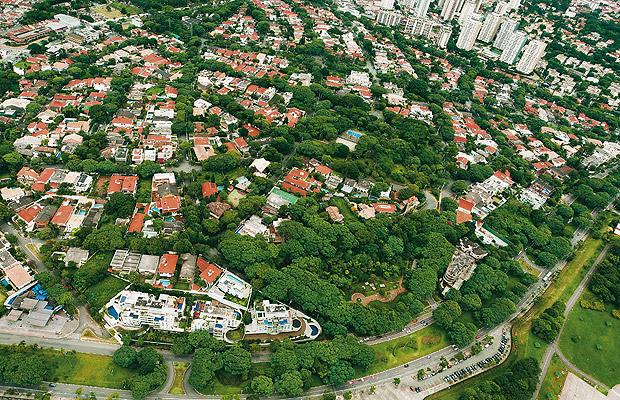

O Bairro Alto da Lapa é um bairro nobre do distrito da Lapa, na cidade de São Paulo, no Brasil. Teve sua concepção urbanística criada pelo arquiteto e urbanista inglês Barry Parker, com jardins internos, traçado sinuoso de ruas, muitas praças e intensa arborização.
O bairro foi finalizado em 1929. Foi desenvolvido para a população operária, porém acabou por atrair imigrantes bem-sucedidos financeiramente.
Devido às diversas restrições de uso do solo criadas pela empresa loteadora, o bairro apresenta características de bairro-jardim, modelo que, na época, era tido como inovador. As regras do zoneamento da cidade fazem com que o mesmo mantenha suas características originais. [1]
O Alto da Lapa é um bairro nobre da Zona Oeste de São Paulo, conhecido pelas suas ruas tranquilas e com grande infraestrutura de comércio e serviços.
Esse bairro é considerado como “bairro-jardim”, por conta das ruas calmas e arborizadas. O local foi desenvolvido com grandes áreas verdes, jardins internos e muitas praças, possuindo uma linda paisagexm que transmite conforto e tranquilidade aos moradores.[2]
| Classe Social | A/B |
|---|---|
| Área | 1,34 km² | Localização | Zona Oeste |
| Imigração predominante | Hungria e Polônia |
O bairro está localizado em um ponto estratégico da cidade, próximo de importantes vias, como a Rua Heitor Penteado, que liga à Pinheiros, Av. Paulista e outros bairros das zonas sul e oeste de São Paulo.
Também não faltam opções para quem utiliza transporte público. Duas estações da CPTM que levam ao centro e que possuem integração com o metrô estão próximas do Alto da Lapa.
Há também a estação Vila Madalena do Metrô, que pertence à Linha 2-Verde, e passa pelas linhas Azul e Amarela, percorrendo regiões como Paraíso, Alto do Ipiranga e Consolação.[3]
[2] e [3] Alto da Lapa: tranquilidade e infraestrutura completa em um só lugar